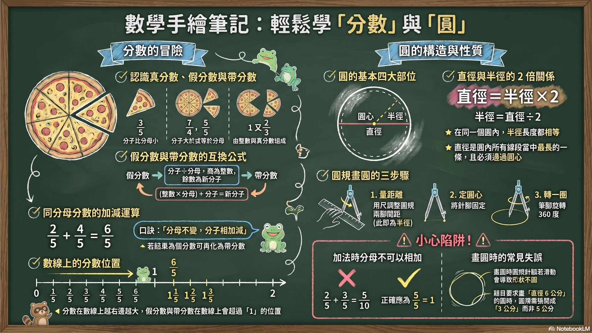

認識圓的基本要素
了解半徑與直徑的關係
學會使用圓規畫圓
4-1 認識圓
圓的四大要素
圓心（O）
圓最中間的那個點，通常標示為 O
圓周
圓的外圍那一圈曲線
半徑
從圓心到圓周的線段
直徑
通過圓心，連接圓周兩點的線段
重要性質
- 同一個圓的半徑都等長
- 同一個圓的直徑都等長
- 直徑 = 半徑 × 2（半徑 = 直徑 ÷ 2）
- 直徑是圓中最長的線段
💡 找圓心的方法：把圓形紙對折兩次，兩條摺線的交叉點就是圓心！
4-2 使用圓規畫圓
- 圓規兩腳之間的距離 = 半徑
- 針腳固定在紙上，旋轉鉛筆腳一圈就完成
- 畫指定直徑的圓：先算半徑（直徑 ÷ 2），再設定圓規
💡 例：畫直徑 10 cm 的圓 → 半徑 = 10 ÷ 2 = 5 cm → 圓規張開 5 cm
📖 關鍵名詞
| 名詞 | 說明 |
|---|---|
| 圓心 | 圓最中間的點，標示為 O |
| 圓周 | 圓的外圍曲線 |
| 半徑 | 從圓心到圓周的線段長度 |
| 直徑 | 通過圓心、連接圓周兩點的線段，等於半徑的 2 倍 |
| 圓規 | 用來畫圓的工具 |
✏️ 形成性評量
選擇題
1. 圓的直徑是半徑的幾倍？
2. 要畫一個直徑 10 公分的圓，圓規兩腳間的距離應該是？
3. 圓中最長的線段是？
是非題
1. 同一個圓的半徑都等長
2. 半徑一定要通過圓心
3. 直徑是半徑的一半
填空題
1. 半徑 6 公分的圓，直徑是 ___ 公分
2. 畫圓的工具叫做 ___
📊 授課簡報
NotebookLM 自動生成｜全 9 單元 15 頁


1 / 15
🖼️ 資訊圖表
點擊可全螢幕檢視

🍎 教師備課區
教學策略
- 用圓形紙對折找圓心，再用圓規實際畫圓
- 準備不同大小的圓形教具讓學生測量半徑和直徑
Bloom 認知層次
| 層次 | 學習目標 |
|---|---|
| 記憶／理解 | 說出圓心、半徑、直徑的定義 |
| 應用 | 用圓規畫出指定大小的圓 |
| 分析 | 解釋為什麼直徑是圓中最長的線段 |
易錯點提醒
- 半徑和直徑的倍數關係搞混（以為直徑=半徑÷2）
- 畫圓時針腳滑動，造成圓不圓
- 忘記直徑必須通過圓心